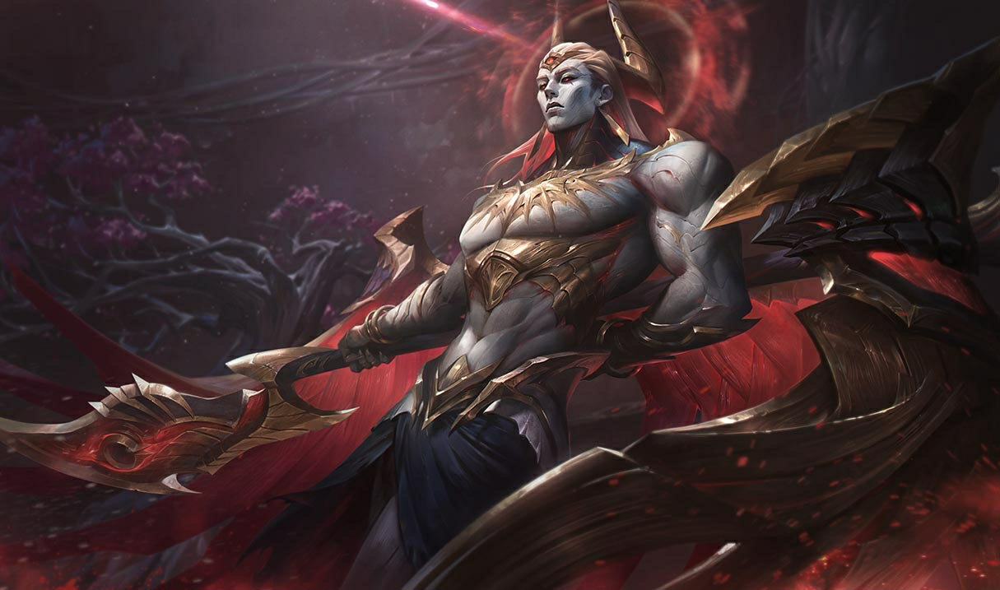

배경 스토리 요약
자헨은 신성한 힘과 불경한 힘을 함께 지닌 몰락한 신으로, 자신의 동족인 다르킨을 사냥하는 존재이다. 그는 자신을 집어삼키려는 타락에 맞서 싸우며, 한때 광기에 빠지는 것을 막기 위해 스스로 글레이브 안에 봉인되었다. 이제 자유의 몸이 된 자헨은 고귀한 마음과 잔혹한 목적을 함께 지닌 채 룬테라를 파멸로 몰아가려는 자들과 싸운다. 그의 싸움은 외부의 적뿐 아니라 자기 내면의 전쟁이기도 하다.

전사 / 암살자 / 난이도: 하
자헨은 신성한 힘과 불경한 힘을 함께 지닌 몰락한 신으로, 자신의 동족인 다르킨을 사냥하는 존재이다. 그는 자신을 집어삼키려는 타락에 맞서 싸우며, 한때 광기에 빠지는 것을 막기 위해 스스로 글레이브 안에 봉인되었다. 이제 자유의 몸이 된 자헨은 고귀한 마음과 잔혹한 목적을 함께 지닌 채 룬테라를 파멸로 몰아가려는 자들과 싸운다. 그의 싸움은 외부의 적뿐 아니라 자기 내면의 전쟁이기도 하다.